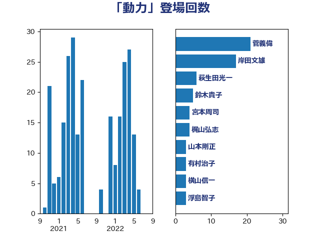

単語「動力」

| 菅義偉 | 自由民主党 | 21 回 |
| 岸田文雄 | 自由民主党 | 17 回 |
| 萩生田光一 | 自由民主党 | 6 回 |
| 鈴木貴子 | 自由民主党 | 5 回 |
| 宮本周司 | 自由民主党 | 4 回 |
| 梶山弘志 | 自由民主党 | 4 回 |
| 山本剛正 | 日本維新の会 | 3 回 |
| 有村治子 | 自由民主党 | 3 回 |
| 横山信一 | 公明党 | 3 回 |
| 浮島智子 | 公明党 | 3 回 |
| 舞立昇治 | 自由民主党 | 3 回 |
| 芳賀道也 | 国民民主党 | 3 回 |
| 野田聖子 | 自由民主党 | 3 回 |
| 鈴木俊一 | 自由民主党 | 3 回 |
| 伊波洋一 | 無所属 | 2 回 |
| 吉良州司 | 無所属 | 2 回 |
| 坂本哲志 | 自由民主党 | 2 回 |
| 小林鷹之 | 自由民主党 | 2 回 |
| 尾身朝子 | 自由民主党 | 2 回 |
| 山際大志郎 | 自由民主党 | 2 回 |
| 末松信介 | 自由民主党 | 2 回 |
| 河西宏一 | 公明党 | 2 回 |
| 浜口誠 | 国民民主党 | 2 回 |
| 浜田聡 | NHK党 | 2 回 |
| 浦野靖人 | 日本維新の会 | 2 回 |
| 田中英之 | 自由民主党 | 2 回 |
| 田村智子 | 日本共産党 | 2 回 |
| 赤羽一嘉 | 公明党 | 2 回 |
| 長妻昭 | 立憲民主党 | 2 回 |
| 青木愛 | 立憲民主党 | 2 回 |
| 下村博文 | 自由民主党 | 1 回 |
| 世耕弘成 | 自由民主党 | 1 回 |
| 中島克仁 | 立憲民主党 | 1 回 |
| 中村裕之 | 自由民主党 | 1 回 |
| 中谷一馬 | 立憲民主党 | 1 回 |
| 串田誠一 | 日本維新の会 | 1 回 |
| 丸川珠代 | 自由民主党 | 1 回 |
| 井上信治 | 自由民主党 | 1 回 |
| 井上英孝 | 日本維新の会 | 1 回 |
| 井原巧 | 自由民主党 | 1 回 |
| 佐藤英道 | 公明党 | 1 回 |
| 佐藤茂樹 | 公明党 | 1 回 |
| 加田裕之 | 自由民主党 | 1 回 |
| 古賀之士 | 立憲民主党 | 1 回 |
| 國重徹 | 公明党 | 1 回 |
| 塩川鉄也 | 日本共産党 | 1 回 |
| 守島正 | 日本維新の会 | 1 回 |
| 安江伸夫 | 公明党 | 1 回 |
| 安達澄 | 無所属 | 1 回 |
| 宗清皇一 | 自由民主党 | 1 回 |
| 小泉進次郎 | 自由民主党 | 1 回 |
| 小渕優子 | 自由民主党 | 1 回 |
| 小野泰輔 | 日本維新の会 | 1 回 |
| 山口壯 | 自由民主党 | 1 回 |
| 山口那津男 | 公明党 | 1 回 |
| 山崎誠 | 立憲民主党 | 1 回 |
| 山田賢司 | 自由民主党 | 1 回 |
| 岡本あき子 | 立憲民主党 | 1 回 |
| 岩谷良平 | 日本維新の会 | 1 回 |
| 平井卓也 | 自由民主党 | 1 回 |
| 平山佐知子 | 無所属 | 1 回 |
| 平木大作 | 公明党 | 1 回 |
| 朝日健太郎 | 自由民主党 | 1 回 |
| 東徹 | 日本維新の会 | 1 回 |
| 松山政司 | 自由民主党 | 1 回 |
| 松本尚 | 自由民主党 | 1 回 |
| 松野博一 | 自由民主党 | 1 回 |
| 柴田巧 | 日本維新の会 | 1 回 |
| 梅村みずほ | 日本維新の会 | 1 回 |
| 梅谷守 | 立憲民主党 | 1 回 |
| 森屋隆 | 立憲民主党 | 1 回 |
| 河野太郎 | 自由民主党 | 1 回 |
| 津島淳 | 自由民主党 | 1 回 |
| 浅田均 | 日本維新の会 | 1 回 |
| 渡辺創 | 立憲民主党 | 1 回 |
| 熊野正士 | 公明党 | 1 回 |
| 片山さつき | 自由民主党 | 1 回 |
| 片山大介 | 日本維新の会 | 1 回 |
| 田中健 | 国民民主党 | 1 回 |
| 田村憲久 | 自由民主党 | 1 回 |
| 石井章 | 日本維新の会 | 1 回 |
| 石川昭政 | 自由民主党 | 1 回 |
| 秋野公造 | 公明党 | 1 回 |
| 竹内譲 | 公明党 | 1 回 |
| 笹川博義 | 自由民主党 | 1 回 |
| 篠原孝 | 立憲民主党 | 1 回 |
| 緑川貴士 | 立憲民主党 | 1 回 |
| 美延映夫 | 日本維新の会 | 1 回 |
| 自見はなこ | 自由民主党 | 1 回 |
| 藤原崇 | 自由民主党 | 1 回 |
| 藤川政人 | 自由民主党 | 1 回 |
| 西岡秀子 | 国民民主党 | 1 回 |
| 西村康稔 | 自由民主党 | 1 回 |
| 進藤金日子 | 自由民主党 | 1 回 |
| 野上浩太郎 | 自由民主党 | 1 回 |
| 金村龍那 | 日本維新の会 | 1 回 |
| 鈴木義弘 | 国民民主党 | 1 回 |
| 階猛 | 立憲民主党 | 1 回 |
| 須藤元気 | 無所属 | 1 回 |
| 高木かおり | 日本維新の会 | 1 回 |
| 鰐淵洋子 | 公明党 | 1 回 |